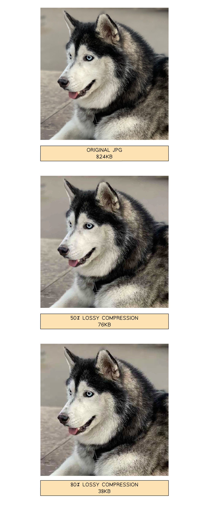
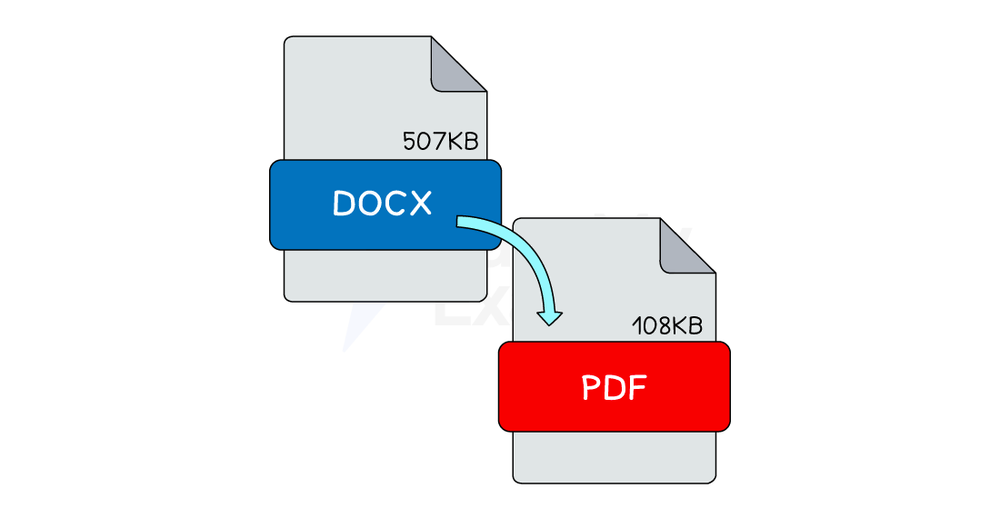
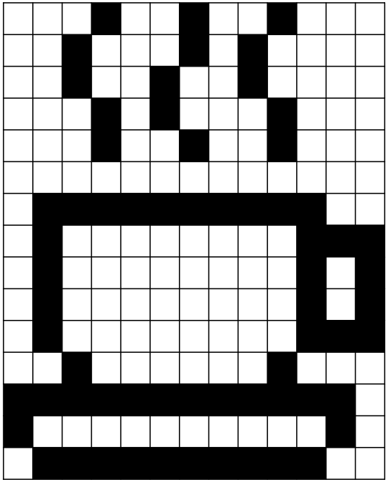
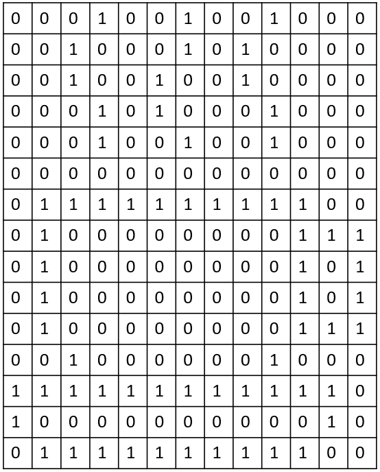
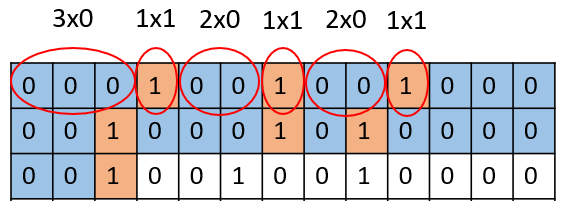

Compression
The need for compression
What is compression?
- Compression is reducing the the size of a file so that it takes up less space on secondary storage
- There are scenarios where compression may be needed, such as:
- Maximise the amount of data you can store on a digital device such as a mobile phone or tablet
- Minimise the transfer time of data being uploaded, downloaded or streamed across a network such as the Internet
- Compression can be achieved using two methods, lossy and lossless
Lossy vs lossless
What is lossy compression?
- Lossy compression is when data is lost in order to reduce the size on secondary storage
- Lossy compression is irreversible
- Lossy can greatly reduce the size of a file but at the expense of losing quality
- Lossy is only suitable for data where reducing quality is acceptable, for example images, video and sound
-
In photographs, lossy compression will try to group similar colours together, reducing the amount of colours in the image without compromising the overall quality of the image

-
In the images above, lossy compression is applied to a photograph and dramatically reduces the file size
- Data has been removed and the overall quality has been reduced, however it is acceptable as it is difficult to visually see a difference
- Lossy compressed photographs take up less storage space which means you can store more and they are quicker to share across a network
What is lossless compression?
- Lossless compression is when data is encoded in order to reduce the size on secondary storage
- Lossless compression is reversible, the file can be returned to its original state
- Lossless can reduce the size of a file but not as dramatically as lossy
- Lossless can be used on all data but is more suitable for data where a loss in quality is unacceptable, for example documents
-
In a document, lossless compression uses algorithms to analyse the contents looking for patterns and repetition

-
In the image above, lossless compression is automatically applied to document formats such as DOCX and PDF with a different rate of success
- When you open a lossless compressed document the decompression process reverses the algorithms and returns the data back to its original state
- Lossless compressed documents take up less storage space which means you can store more and they are quicker to share across a network
Compression Techniques
File compression
MPEG-3 (MP3) - Audio compression
- MP3 uses audio compression to reduce file size
- A typical music file can be reduced by up to 90% (e.g. 80 MB to 8 MB)
- MP3 files are used on:
- MP3 players
- Computers
- Smart phones
- Music can be:
- Downloaded or streamed from the internet
- Converted from a CD to MP3 format
- MP3 quality isn’t as high as the original CD, but it’s good enough for most people
- MP3 uses perceptual music shaping to remove sounds we don’t notice:
- Frequencies outside human hearing range
- Quieter sounds that are masked by louder ones
- This makes the file smaller without a big drop in quality
- MP3 is a lossy format:
- Some original data is permanently lost
- You can’t get the original file back
MPEG-4 (MP4) - Multimedia file format
- MP4 is similar to MP3, but stores more than just audio
- It can store:
- Music
- Videos
- Photos
- Animations
- Commonly used for streaming videos over the internet
- MP4 uses compression to keep file size small
- Maintains high quality without noticeable loss to the viewer
Images
- Bitmap images can be compressed, the file size and quality are reduced
- JPEG is the most common file format for bitmap images
- The JPEG compression algorithm creates a new file, so the original file can no longer be used
- Vector graphics can also be compressed but with limited success
- Scalable vector graphics (.svg) use an XML text file which means that allows them to be compressed.
Run-length encoding (RLE)
What is run-length encoding?
- Run-length encoding (RLE) is a form of data compression that condenses identical elements into a single value with a count
Text data
- For text data containing the string ” AAAABBBCCDAA “, the plain RLE encoding would be ” 4A3B2C1D2A “
- The string has:
- four ‘A’s (4A)
- three ‘B’s (3B)
- two ‘C’s (2C)
- one ‘D’ (1D)
- two ‘A’s (2A)
- To represent this in binary, the count is stored in a fixed size binary format (e.g. 7 or 8 bits)
- The character is stored using its ASCII value (7 bits)
- The binary RLE representation of 4A would be 0000100 1000001
- 0000100 - binary for the count (4)
- 1000001 - binary for ‘A’ (65)
Images
- Run-length encoding (RLE) uses frequency/data pairs to compress bitmap image data
- For example, the following bitmap image with a bit depth of 1 bit would have the following binary bit pattern
| Bitmap | Bit pattern |
|---|---|
 |
 |
-
Using RLE we group pixel colours and can create frequency/data pairs as follows
- 3 0, 1 1, 2 0, 1 1, 2 0, 1 1, 5 0, 1 1, 3 0, 1 1, 1 0, 1 1, 6 0, 1 1......

- 3 0, 1 1, 2 0, 1 1, 2 0, 1 1, 5 0, 1 1, 3 0, 1 1, 1 0, 1 1, 6 0, 1 1......
-
3 x 0 = 3 x white, 1 x 1 = 1 x black
- Data pairs can carry over on to the next line, e.g. end of first line and start of second line is 5 x 0 (5 x white)
- The original file would need to use 195 bits of storage space
- The RLE compressed file would need use 38 bits of storage space, a saving of 157 bits (80%)
- For images using more than two colours, the RGB value for each colour is stored along with the count
- For example, an image using the following four colours:
| Colour | Red | Green | Blue |
|---|---|---|---|
| Black | 0 | 0 | 0 |
| White | 255 | 255 | 255 |
| Red | 255 | 0 | 0 |
| Green | 0 | 255 | 0 |
- The data stored could look like:
- 10 0 0 0 5 255 0 0 3 0 255 0
- Ten black pixels ((10) 0 0 0) - count + RGB
- Five red pixels ((5) 255 0 0) - count + RGB
- Three green pixels ((3) 0 255 0) - count + RGB